Virtua Fighter 5 FS コスプレ：リリアン女学園 編 その２
先日の VF5FS コスプレの三つの記事のあと、全キャラの衣装を調べるべく、とにかく全キャラに一つずつ「コスプレ」を作ってみることにした。VF5FS の「コスプレ」は、他のゲーム(後述)の「キャラクリ」と違い、自由度が少ないが、限られたコスチュームで自分が気に入るコーディネイトをした結果、何かのテーマやキャラが見えてくるのが楽しい。 今回は、そうやって「コスプレ」させたのをテーマごとに《リリアン女学園 編２》《イロモノ 編》《懐かしのスター 編》としてまとめ、紹介する。この記事は『マリア様がみてる』の《リリアン女学園 編２》で、先の山百合会のメンバーをモチーフとした《リリアン女学園 編》の続きである。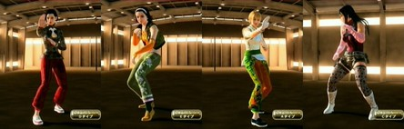
なお、この記事のリード部分は各編でも同じなので、すでに読んだ方は次の節まで読み飛ばしてくださればよい。 『Virtua Fighter 5 Final Showdown』(バーチャファイター５ファイナルショーダウン、略して VF5FS) は、元はアーケードゲームだったのが、Xbox 360 または PlayStation 3 に移植されたもので、ダウンロードで購入できる。 さらに追加コスチュームを買うことでキャラの衣装を変えられるようになる。各キャラごとにコスチュームが売っているが、複数のキャラがセットになったものが２セットあり、その２セットを変えばすべのキャラの衣装が揃う。 私は前作の『Virtua Fighter 5 Live Arena』(以下 VF5LA と略す)もダウンロード購入していたが、そちらは衣装は各キャラで攻略をしてはじめて手に入るものだった。ところが、今作 VF5FS のダウンロード版では、キャラのコスチュームセットを買えば、いきなりすべての衣装が使える。 だから、「コスプレ」目的ならば、ダウンロード購入時に一気に複数キャラのアイテムセットのその１とその２を揃えてしまえば、幸か不幸か最初に出たアイテムセット以来、新しいコスチュームの追加はないので、すべての衣装を制限なく使えることになる。(CG の動きのはげしさを避けるためらしい制限はある。)今なら全部で 3600 MSP (PS3 だと4500円)。オススメ。 (「コスプレ」のこのゲーム内での正しい呼称は「アイテムカスタマイズ」らしい。Terminal メニューから入る。) なお、『Virtua Fighter 2』が好きだったオールドファンの中には「バーチャ」が、3や 4 になってどんどん操作や概念が難しくなることに付いていけなくなった方もいるかもしれない。(私もそうだった。)でも、この 5 のシステムは、あえて操作を単純化する方向が出されているようで、ファンの多かった VF2 のグラフィックを極限まで美化した「だけ」に留めたといった感がある。ロートル格闘ゲーマーにもオススメである。 この先、コスプレデータの「レシピ」すなわち使った衣装名等も公開するが、言及のない身体部位はアイテムを使っておらず、省略した。 ■※注意※ 『マリア様がみてる』を読んでない方、観てない方へのお断りとして。 《リリアン女学園 編》《リリアン女学園 編２》に出てくるキャラの服装は髪型以外ほとんど原作を参考にしておらず、その話の雰囲気から私なりにコーディネイトしたもの。また、原作は「山百合会」という生徒会のお話だが、それが「格闘生徒会」だなどという設定はなく、私の同人誌的妄想に過ぎない。あしからず…。 ■水野 蓉子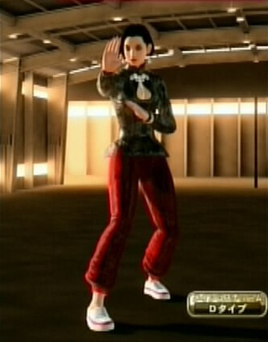
大人っぽさっていうのかな、『島耕作』シリーズにでも出てきそうな感じにした。蓉子様は、卒業後は、ビジネス面で「できる女」というところを追ってるだろうという印象がある。これからが大変な祥子をビジネスの面からアドバイザーにもなれるように…といったところで。 拳法をしているのは、美容や健康のためというよりは、自尊心の充足を、猿山のボス猿的なお局様になるところに求めないため、護身というよりは、男社会の女性性の押し付けに対抗するため、男性性の介入が少なく、かといって、会話や知識を中心としないような女性組識に属する必要を感じたから。…かな。 なお、下で名前がフルネームなのは、アニメキャラ等で今後、名前が被るのがあるかもしれないから。 名前: YoukoMizuno 素体: パイ Dタイプ 髪、帽子: ショートストレートヘアー 耳: ホワイトサファイアピアス 鼻、口: しっかりメイク 手首: 金の腕輪 手: ルビーネイルアート 首: ちょうちょ結び アウター: 黒い胸開き中華シャツ パンツ: 赤い中華パンツ 足: ピンクライン入り中華シューズ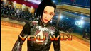
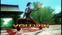
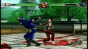
■鳥居 江利子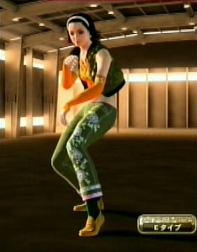
江利子様は、「格闘生徒会」の言い出しっぺでありながら、その段になると「実はちょっと怖い」から、ミリタリーを思わせる色づかいでハッタリをかけてみた。…といったイメージで固めた。 髪をブラウンにしようと思ったら他のキャラのようには無かった。アイリーンは元からブラウンの髪という設定なのだろう。アイリーンを使えば、コミカルになるのは仕方ないと思っていたが、立ち姿は、割とまじめなイメージにまとまったように思う。 名前: Eriko 素体: アイリーン Eタイプ 髪、帽子: ホワイトヘアバンド 手: ブラックネイルアート 首: カジュアルネックレス インナー: オレンジスターノースリーブシャツ アウター: モスグリーンダウンジャケット パンツ: モスグリーンローライズパンツ 足: 緑色ソックス＆黄土色ローファー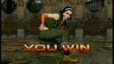
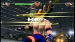
■支倉 令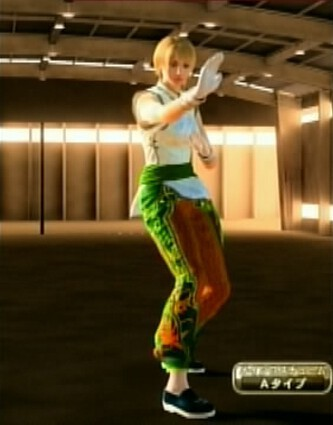
江利子様が割とまじめなイメージにまとまったので、令をアイリーンで作るという方向はなくなった。少し弱々しくなるかと思ったが、実務的には、令は、江利子様より蓉子様を継いだという印象もあって、パイで作ることにした。 令の「男性性」は、由乃が求めたのに応じての部分が、無意識かもしれないが、大きく、その点、強くなるためのものというより、女性が美しいと思える王子的な気高さを<ruby><rb>纏</rb><rt>まと</rt></ruby>っていると考えるべきなのだと思う。彼女にとって、手袋は自分を清潔に扱って欲しいという願いの表現であり、ズボンは隠したままの自分でも欲することへの躍動感の表現なのだと思う。 なお、下で名前がフルネームなのは、蓉子様と同じくアニメキャラ等で今後、名前が被るのがあるかもしれないから。特に「綾波レイ」は私にとってはお約束だから。 名前: ReiHasekura 素体: パイ Aタイプ 髪、帽子: ブロンドナチュラルショートヘアー 耳: ティアドロップゴールドピアス 鼻、口: ピンクルージュ 手首: 白革の腕輪 手: 白いシルク手袋 アウター: 花柄白中華タンクトップ ベルト: 緑色中華帯 パンツ: 緑と橙色の紅葉柄中華パンツ 足: 紺色中華シューズ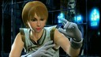
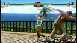
■小笠原 祥子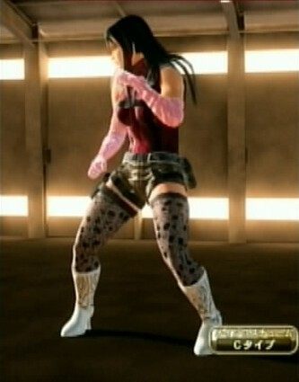
さてこれで「オチ」もついたな。って、嘘、嘘、ああ、また石を投げないで。 祥子はアオイかサラかで迷ってベネッサになった。よくあることだよね！祥子は蓉子様のプティ・スールなんだが、聖に対する憧れのようなものを持ってると思う。志摩子を争ったあたり、志摩子が気になるというよりも聖へのあてつけの面が強かったというのが私の解釈。 で、聖がベネッサ流になったら、やるとなったら「本格的なもの」を求めがちな、かつ、やると決めたら猪突猛進なところがある祥子様はやっぱり、ベネッサ流をやるんじゃないか、というのが私の脳内ストーリー。祐巳の「コスプレ」に似ている(似させた)のは、祐巳が祥子をマネた面もあり、逆の面もありといったところ。 ベネッサはデフォルトでない髪型をさせるとカワイイ。というかベネッサは「ゴツさ」を出すため、わざとデフォルトは似合わない髪型にしてるんじゃないかと疑う。少しでも薔薇様らしくということで便宜的に色白にしたが、聖なんかは元の肌色のほうがいいんではないかと迷ったくらい。(←何を必死にフォローしてるんだか。(^^;)) 名前: Sachiko 素体: ベネッサ Cタイプ 髪、帽子: 黒髪ビューティーロングヘアー 瞳: ブラウンアイブロウ 耳: レッドクリスタルイヤリング 手: 桃色のシャーリング長手袋 首: ターコイズネックレス インナー: ピンク迷彩コンバットスーツ 肌: 色白 ベルト: グレーコンバットベルト 腰: グレーミリタリーポーチ パンツ: カーキオフィサーパンツ 足: ホワイトウェスタンブーツ ■配布物 なお、これらの「コスプレ レシピ」と画面写真をまとめたものを zip化して同人的公開物として SugarSync に置いてあります。 JRF_VF5FS_Cosplay.zip。 VF5FS は、SEGA の 2012年発売の著作物です。私自身は「レシピ」を同人で売れたりしたらいいのになぁ…即売会とかのお祭りにゲーム機とディスプレイを持ちこんで遊べないかなぁ…とか夢想しています。ただ、需要もそれほどないでしょうし、とりあえず公開したほうが愛着を持ってもらえるかと考え、無料で公開しています。ネットで公開した以上、SEGA がどういうかはわかりませんが、基本的に私としては自由に使っていただいてかまいません。 とはいえ、同人活動への色気は残しておきたいので、ダウンロード数がカウントできる SugarSync に置いています。そこに別サイトからリンクするのはいつでもこちらがリンクを切れるのでいいのですが、別サイトにアーカイブを置いての配布は、私か SEGA がいいと言わない限りやめていただくようお願いします。(私の公開自体が同人誌な勝手な公開ですので、SEGA の明示の許諾さえあれば、私は文句をいいません。) ■関連 ●VF5FS コスプレシリーズ(《リリアン女学園 編》、《七曜 編》、《その他 編》、《リリアン女学園 編２》、《イロモノ 編》、《懐かしのスター 編》)。この記事は《リリアン女学園 編》の続きである。 ●『マリア様がみてる』。元は小説で、アニメのほか、実写映画にもなっている。特に実写のは日本の新しい「ファンタジー」路線として個人的には、高く評価している。 ●『ソウルキャリバー４』。最初で「他のゲームのキャラクリ」というのはこのゲームのキャラクタークリエイションのこと。このブログで以前、作ったキャラを紹介している。(《バビル二世編》、《懐かしキャラ編１》、《懐かしキャラ編２》) 更新：2012-12-15,2012-12-21 初公開：2012年12月21日 21:09:41 最新版：2012年12月21日 21:09:41 Links: リリアン女学園 編２: http://jrf.cocolog-nifty.com/column/2012/12/post-3.html イロモノ 編: http://jrf.cocolog-nifty.com/column/2012/12/post-4.html 懐かしのスター 編: http://jrf.cocolog-nifty.com/column/2012/12/post-5.html マリア様がみてる: http://ja.wikipedia.org/wiki/%E3%83%9E%E3%83%AA%E3%82%A2%E6%A7%98%E3%81%8C%E3%81%BF%E3%81%A6%E3%82%8B リリアン女学園 編: http://jrf.cocolog-nifty.com/column/2012/12/post.html Virtua Fighter 5 Final Showdown: http://amcvt.sega.jp/vf5fs/ Virtua Fighter 5 Live Arena: http://virtuafighter5.jp/xbox360/ Virtua Fighter 2: http://amcvt.sega.jp/model2/vf2.html 島耕作: http://ja.wikipedia.org/wiki/%E8%AA%B2%E9%95%B7%E5%B3%B6%E8%80%95%E4%BD%9C 綾波レイ: http://ja.wikipedia.org/wiki/%E7%B6%BE%E6%B3%A2%E3%83%AC%E3%82%A4 JRF_VF5FS_Cosplay.zip: https://www.sugarsync.com/pf/D252372_79_8912523711 七曜 編: http://jrf.cocolog-nifty.com/column/2012/12/post-1.html その他 編: http://jrf.cocolog-nifty.com/column/2012/12/post-2.html ソウルキャリバー４: http://www.soularchive.jp/SC4/ バビル二世編: http://jrf.cocolog-nifty.com/column/2010/10/post-1.html 懐かしキャラ編１: http://jrf.cocolog-nifty.com/column/2010/11/post-1.html 懐かしキャラ編２: http://jrf.cocolog-nifty.com/column/2010/11/post.html
後方参照 (2 件)
- URL参照 Virtua Fighter 5 FS コスプレ：イロモノ 編 2012年12月21日 21:13:20
- URL参照 Virtua Fighter 5 FS コスプレ：懐かしのスター 編 2012年12月21日 21:17:33